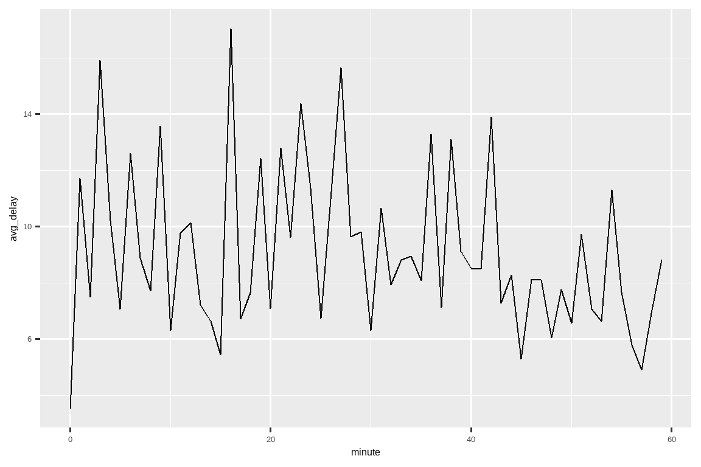

17 Dates and times
17.1 Introduction
This chapter will show you how to work with dates and times in R. At first glance, dates and times seem simple. You use them all the time in your regular life, and they don’t seem to cause much confusion. However, the more you learn about dates and times, the more complicated they seem to get!
本章将向你展示如何在 R 中处理日期和时间。乍一看，日期和时间似乎很简单。你在日常生活中一直使用它们，而且它们似乎没有引起太多困惑。然而，你对日期和时间了解得越多，它们似乎就变得越复杂！
To warm up think about how many days there are in a year, and how many hours there are in a day. You probably remembered that most years have 365 days, but leap years have 366. Do you know the full rule for determining if a year is a leap year1? The number of hours in a day is a little less obvious: most days have 24 hours, but in places that use daylight saving time (DST), one day each year has 23 hours and another has 25.
为了热身，想一想一年有多少天，一天有多少小时。你可能记得大多数年份有 365 天，但闰年有 366 天。你知道判断一年是否是闰年的完整规则吗1？一天中的小时数则不那么明显：大多数日子有 24 小时，但在使用夏令时 (Daylight Saving Time, DST) 的地方，每年有一天是 23 小时，另一天是 25 小时。
Dates and times are hard because they have to reconcile two physical phenomena (the rotation of the Earth and its orbit around the sun) with a whole raft of geopolitical phenomena including months, time zones, and DST. This chapter won’t teach you every last detail about dates and times, but it will give you a solid grounding of practical skills that will help you with common data analysis challenges.
日期和时间之所以困难，是因为它们必须调和两种物理现象（地球的自转和绕太阳的公转）与一系列地缘政治现象，包括月份、时区和夏令时。本章不会教你关于日期和时间的每一个细节，但它会为你提供坚实的实践技能基础，帮助你应对常见的数据分析挑战。
We’ll begin by showing you how to create date-times from various inputs, and then once you’ve got a date-time, how you can extract components like year, month, and day. We’ll then dive into the tricky topic of working with time spans, which come in a variety of flavors depending on what you’re trying to do. We’ll conclude with a brief discussion of the additional challenges posed by time zones.
我们将首先向你展示如何从各种输入创建日期时间，然后一旦你有了日期时间，你将学习如何提取年、月、日等组件。接着，我们将深入探讨处理时间跨度这个棘手的话题，它根据你的不同需求有多种形式。最后，我们将简要讨论时区带来的额外挑战。
17.1.1 Prerequisites
This chapter will focus on the lubridate package, which makes it easier to work with dates and times in R. As of the latest tidyverse release, lubridate is part of core tidyverse. We will also need nycflights13 for practice data.
本章将重点介绍 lubridate 包，它使得在 R 中处理日期和时间变得更加容易。从最新的 tidyverse 版本开始，lubridate 已成为核心 tidyverse 的一部分。我们还将需要 nycflights13 包来获取练习数据。
17.2 Creating date/times
There are three types of date/time data that refer to an instant in time:
有三种类型的日期/时间数据可以指代一个时间点：
A date. Tibbles print this as
<date>.
date (日期)。Tibbles 将其打印为<date>。A time within a day. Tibbles print this as
<time>.
一天中的 time (时间)。Tibbles 将其打印为<time>。A date-time is a date plus a time: it uniquely identifies an instant in time (typically to the nearest second). Tibbles print this as
<dttm>. Base R calls these POSIXct, but that doesn’t exactly trip off the tongue.
date-time (日期时间) 是日期加上时间：它唯一地标识了一个时间点（通常精确到秒）。Tibbles 将其打印为<dttm>。基础 R 称之为 POSIXct，但这名字并不怎么上口。
In this chapter we are going to focus on dates and date-times as R doesn’t have a native class for storing times. If you need one, you can use the hms package.
在本章中，我们将专注于日期和日期时间，因为 R 没有用于存储时间的原生类。如果你需要，可以使用 hms 包。
You should always use the simplest possible data type that works for your needs. That means if you can use a date instead of a date-time, you should. Date-times are substantially more complicated because of the need to handle time zones, which we’ll come back to at the end of the chapter.
你应该始终使用能满足你需求的、尽可能简单的数据类型。这意味着如果你可以使用日期而不是日期时间，你就应该这样做。日期时间要复杂得多，因为需要处理时区问题，我们将在本章末尾再回到这个话题。
To get the current date or date-time you can use today() or now():
要获取当前日期或日期时间，你可以使用 today() 或 now()：
Otherwise, the following sections describe the four ways you’re likely to create a date/time:
此外，以下各节描述了你可能用来创建日期/时间的四种方式：
While reading a file with readr.
使用 readr 读取文件时。From a string.
从字符串创建。From individual date-time components.
从单个日期时间组件创建。From an existing date/time object.
从现有的日期/时间对象创建。
17.2.1 During import
If your CSV contains an ISO8601 date or date-time, you don’t need to do anything; readr will automatically recognize it:
如果你的 CSV 文件包含 ISO8601 格式的日期或日期时间，你什么都不用做；readr 会自动识别它：
csv <- "
date,datetime
2022-01-02,2022-01-02 05:12
"
read_csv(csv)
#> # A tibble: 1 × 2
#> date datetime
#> <date> <dttm>
#> 1 2022-01-02 2022-01-02 05:12:00If you haven’t heard of ISO8601 before, it’s an international standard2 for writing dates where the components of a date are organized from biggest to smallest separated by -. For example, in ISO8601 May 3 2022 is 2022-05-03. ISO8601 dates can also include times, where hour, minute, and second are separated by :, and the date and time components are separated by either a T or a space. For example, you could write 4:26pm on May 3 2022 as either 2022-05-03 16:26 or 2022-05-03T16:26.
如果你之前没有听说过 ISO8601，它是一个书写日期的国际标准2，其中日期的各个组成部分按从大到小的顺序排列，并用 - 分隔。例如，在 ISO8601 标准中，2022 年 5 月 3 日写作 2022-05-03。ISO8601 日期也可以包含时间，其中小时、分钟和秒用 : 分隔，日期和时间部分可以用 T 或空格分隔。例如，你可以将 2022 年 5 月 3 日下午 4:26 写成 2022-05-03 16:26 或 2022-05-03T16:26。
For other date-time formats, you’ll need to use col_types plus col_date() or col_datetime() along with a date-time format. The date-time format used by readr is a standard used across many programming languages, describing a date component with a % followed by a single character. For example, %Y-%m-%d specifies a date that’s a year, -, month (as number) -, day. Table Table 17.1 lists all the options.
对于其他日期时间格式，你需要使用 col_types 加上 col_date() 或 col_datetime() 以及一个日期时间格式。readr 使用的日期时间格式是许多编程语言通用的标准，用 % 后跟一个单字符来描述日期组件。例如，%Y-%m-%d 指定了一个由年、-、月（数字）、-、日组成的日期。表格 Table 17.1 列出了所有选项。
| Type | Code | Meaning | Example |
|---|---|---|---|
| Year | %Y |
4 digit year / 4 位数年份 | 2021 |
%y |
2 digit year / 2 位数年份 | 21 | |
| Month | %m |
Number / 数字 | 2 |
%b |
Abbreviated name / 缩写名称 | Feb | |
%B |
Full name / 完整名称 | February | |
| Day | %d |
One or two digits / 一位或两位数字 | 2 |
%e |
Two digits / 两位数 | 02 | |
| Time | %H |
24-hour hour / 24 小时制小时 | 13 |
%I |
12-hour hour / 12 小时制小时 | 1 | |
%p |
AM/PM / 上午/下午 | pm | |
%M |
Minutes / 分钟 | 35 | |
%S |
Seconds / 秒 | 45 | |
%OS |
Seconds with decimal component / 带小数的秒 | 45.35 | |
%Z |
Time zone name / 时区名称 | America/Chicago | |
%z |
Offset from UTC / 与 UTC 的偏移量 | +0800 | |
| Other | %. |
Skip one non-digit / 跳过一个非数字字符 | : |
%* |
Skip any number of non-digits / 跳过任意数量的非数字字符 |
And this code shows a few options applied to a very ambiguous date:
下面的代码展示了将几种选项应用于一个非常模糊的日期：
csv <- "
date
01/02/15
"
read_csv(csv, col_types = cols(date = col_date("%m/%d/%y")))
#> # A tibble: 1 × 1
#> date
#> <date>
#> 1 2015-01-02
read_csv(csv, col_types = cols(date = col_date("%d/%m/%y")))
#> # A tibble: 1 × 1
#> date
#> <date>
#> 1 2015-02-01
read_csv(csv, col_types = cols(date = col_date("%y/%m/%d")))
#> # A tibble: 1 × 1
#> date
#> <date>
#> 1 2001-02-15Note that no matter how you specify the date format, it’s always displayed the same way once you get it into R.
请注意，无论你如何指定日期格式，一旦将其读入 R，它的显示方式总是相同的。
If you’re using %b or %B and working with non-English dates, you’ll also need to provide a locale(). See the list of built-in languages in date_names_langs(), or create your own with date_names(),
如果你正在使用 %b 或 %B 处理非英语日期，你还需要提供一个 locale()。可以在 date_names_langs() 中查看内置语言列表，或者使用 date_names() 创建自己的语言环境。
17.2.2 From strings
The date-time specification language is powerful, but requires careful analysis of the date format. An alternative approach is to use lubridate’s helpers which attempt to automatically determine the format once you specify the order of the component. To use them, identify the order in which year, month, and day appear in your dates, then arrange “y”, “m”, and “d” in the same order. That gives you the name of the lubridate function that will parse your date. For example:
日期时间规范语言功能强大，但需要仔细分析日期格式。另一种方法是使用 lubridate 的辅助函数，一旦你指定了组件的顺序，它们就会尝试自动确定格式。要使用它们，请确定年、月、日在你的日期中出现的顺序，然后按相同的顺序排列 “y”、“m” 和 “d”。这样你就得到了将解析你的日期的 lubridate 函数的名称。例如：
ymd() and friends create dates. To create a date-time, add an underscore and one or more of “h”, “m”, and “s” to the name of the parsing function:ymd() 和它的朋友们创建的是日期。要创建日期时间，请在解析函数名称后添加一个下划线以及 “h”、“m” 和 “s” 中的一个或多个：
You can also force the creation of a date-time from a date by supplying a timezone:
你还可以通过提供时区来强制从日期创建日期时间：
ymd("2017-01-31", tz = "UTC")
#> [1] "2017-01-31 UTC"Here I use the UTC3 timezone which you might also know as GMT, or Greenwich Mean Time, the time at 0° longitude4 . It doesn’t use daylight saving time, making it a bit easier to compute with .
这里我使用了 UTC3 时区，你可能也知道它叫 GMT，即格林尼治标准时间 (Greenwich Mean Time)，是经度 0° 的时间4。它不使用夏令时，这使得计算起来更容易一些。
17.2.3 From individual components
Instead of a single string, sometimes you’ll have the individual components of the date-time spread across multiple columns. This is what we have in the flights data:
有时，你不会有一个单一的字符串，而是将日期时间的各个组成部分分布在多个列中。flights 数据就是这种情况：
flights |>
select(year, month, day, hour, minute)
#> # A tibble: 336,776 × 5
#> year month day hour minute
#> <int> <int> <int> <dbl> <dbl>
#> 1 2013 1 1 5 15
#> 2 2013 1 1 5 29
#> 3 2013 1 1 5 40
#> 4 2013 1 1 5 45
#> 5 2013 1 1 6 0
#> 6 2013 1 1 5 58
#> # ℹ 336,770 more rowsTo create a date/time from this sort of input, use make_date() for dates, or make_datetime() for date-times:
要从此类输入创建日期/时间，对日期使用 make_date()，对日期时间使用 make_datetime()：
flights |>
select(year, month, day, hour, minute) |>
mutate(departure = make_datetime(year, month, day, hour, minute))
#> # A tibble: 336,776 × 6
#> year month day hour minute departure
#> <int> <int> <int> <dbl> <dbl> <dttm>
#> 1 2013 1 1 5 15 2013-01-01 05:15:00
#> 2 2013 1 1 5 29 2013-01-01 05:29:00
#> 3 2013 1 1 5 40 2013-01-01 05:40:00
#> 4 2013 1 1 5 45 2013-01-01 05:45:00
#> 5 2013 1 1 6 0 2013-01-01 06:00:00
#> 6 2013 1 1 5 58 2013-01-01 05:58:00
#> # ℹ 336,770 more rowsLet’s do the same thing for each of the four time columns in flights. The times are represented in a slightly odd format, so we use modulus arithmetic to pull out the hour and minute components. Once we’ve created the date-time variables, we focus in on the variables we’ll explore in the rest of the chapter.
让我们对 flights 数据中的四个时间列都执行相同的操作。这些时间以一种稍微奇怪的格式表示，所以我们使用模运算来提取小时和分钟部分。一旦我们创建了日期时间变量，我们就专注于将在本章其余部分探讨的变量。
make_datetime_100 <- function(year, month, day, time) {
make_datetime(year, month, day, time %/% 100, time %% 100)
}
flights_dt <- flights |>
filter(!is.na(dep_time), !is.na(arr_time)) |>
mutate(
dep_time = make_datetime_100(year, month, day, dep_time),
arr_time = make_datetime_100(year, month, day, arr_time),
sched_dep_time = make_datetime_100(year, month, day, sched_dep_time),
sched_arr_time = make_datetime_100(year, month, day, sched_arr_time)
) |>
select(origin, dest, ends_with("delay"), ends_with("time"))
flights_dt
#> # A tibble: 328,063 × 9
#> origin dest dep_delay arr_delay dep_time sched_dep_time
#> <chr> <chr> <dbl> <dbl> <dttm> <dttm>
#> 1 EWR IAH 2 11 2013-01-01 05:17:00 2013-01-01 05:15:00
#> 2 LGA IAH 4 20 2013-01-01 05:33:00 2013-01-01 05:29:00
#> 3 JFK MIA 2 33 2013-01-01 05:42:00 2013-01-01 05:40:00
#> 4 JFK BQN -1 -18 2013-01-01 05:44:00 2013-01-01 05:45:00
#> 5 LGA ATL -6 -25 2013-01-01 05:54:00 2013-01-01 06:00:00
#> 6 EWR ORD -4 12 2013-01-01 05:54:00 2013-01-01 05:58:00
#> # ℹ 328,057 more rows
#> # ℹ 3 more variables: arr_time <dttm>, sched_arr_time <dttm>, …With this data, we can visualize the distribution of departure times across the year:
有了这些数据，我们可以可视化一年中出发时间的分布：
flights_dt |>
ggplot(aes(x = dep_time)) +
geom_freqpoly(binwidth = 86400) # 86400 seconds = 1 dayOr within a single day:
或者在一天之内：
flights_dt |>
filter(dep_time < ymd(20130102)) |>
ggplot(aes(x = dep_time)) +
geom_freqpoly(binwidth = 600) # 600 s = 10 minutesNote that when you use date-times in a numeric context (like in a histogram), 1 means 1 second, so a binwidth of 86400 means one day. For dates, 1 means 1 day.
请注意，当你在数值上下文（如直方图）中使用日期时间时，1 代表 1 秒，因此 86400 的 binwidth (组距) 代表一天。对于日期，1 代表 1 天。
17.2.4 From other types
You may want to switch between a date-time and a date. That’s the job of as_datetime() and as_date():
你可能想要在日期时间和日期之间进行切换。这是 as_datetime() 和 as_date() 的工作：
as_datetime(today())
#> [1] "2025-07-11 UTC"
as_date(now())
#> [1] "2025-07-11"Sometimes you’ll get date/times as numeric offsets from the “Unix Epoch”, 1970-01-01. If the offset is in seconds, use as_datetime(); if it’s in days, use as_date().
有时你会得到以 “Unix 纪元” (Unix Epoch, 1970-01-01) 为基准的数值偏移量形式的日期/时间。如果偏移量以秒为单位，使用 as_datetime()；如果以天为单位，使用 as_date()。
as_datetime(60 * 60 * 10)
#> [1] "1970-01-01 10:00:00 UTC"
as_date(365 * 10 + 2)
#> [1] "1980-01-01"17.2.5 Exercises
-
What happens if you parse a string that contains invalid dates?
What does the
tzoneargument totoday()do? Why is it important?-
For each of the following date-times, show how you’d parse it using a readr column specification and a lubridate function.
d1 <- "January 1, 2010" d2 <- "2015-Mar-07" d3 <- "06-Jun-2017" d4 <- c("August 19 (2015)", "July 1 (2015)") d5 <- "12/30/14" # Dec 30, 2014 t1 <- "1705" t2 <- "11:15:10.12 PM"
17.3 Date-time components
Now that you know how to get date-time data into R’s date-time data structures, let’s explore what you can do with them. This section will focus on the accessor functions that let you get and set individual components. The next section will look at how arithmetic works with date-times.
既然你知道如何将日期时间数据导入 R 的日期时间数据结构中，让我们来探索一下你可以用它们做什么。本节将重点介绍允许你获取和设置单个组件的访问器函数。下一节将探讨日期时间的算术运算。
17.3.1 Getting components
You can pull out individual parts of the date with the accessor functions year(), month(), mday() (day of the month), yday() (day of the year), wday() (day of the week), hour(), minute(), and second(). These are effectively the opposites of make_datetime().
你可以使用访问器函数 year()、month()、mday() (月中的天)、yday() (年中的天)、wday() (周中的天)、hour()、minute() 和 second() 来提取日期的各个部分。这些函数实际上是 make_datetime() 的反向操作。
For month() and wday() you can set label = TRUE to return the abbreviated name of the month or day of the week. Set abbr = FALSE to return the full name.
对于 month() 和 wday()，你可以设置 label = TRUE 来返回月份或星期的缩写名称。设置 abbr = FALSE 可以返回完整名称。
We can use wday() to see that more flights depart during the week than on the weekend:
我们可以使用 wday() 发现，工作日起飞的航班比周末多：
We can also look at the average departure delay by minute within the hour. There’s an interesting pattern: flights leaving in minutes 20-30 and 50-60 have much lower delays than the rest of the hour!
我们还可以按小时内的分钟查看平均起飞延误。有一个有趣的模式：在 20-30 分钟和 50-60 分钟之间起飞的航班，其延误时间远低于该小时的其他时间段！
flights_dt |>
mutate(minute = minute(dep_time)) |>
group_by(minute) |>
summarize(
avg_delay = mean(dep_delay, na.rm = TRUE),
n = n()
) |>
ggplot(aes(x = minute, y = avg_delay)) +
geom_line()
Interestingly, if we look at the scheduled departure time we don’t see such a strong pattern:
有趣的是，如果我们查看 计划 出发时间，我们看不到如此强烈的模式：
sched_dep <- flights_dt |>
mutate(minute = minute(sched_dep_time)) |>
group_by(minute) |>
summarize(
avg_delay = mean(arr_delay, na.rm = TRUE),
n = n()
)
ggplot(sched_dep, aes(x = minute, y = avg_delay)) +
geom_line()
So why do we see that pattern with the actual departure times? Well, like much data collected by humans, there’s a strong bias towards flights leaving at “nice” departure times, as Figure 17.1 shows. Always be alert for this sort of pattern whenever you work with data that involves human judgement!
那么，为什么我们会在实际出发时间中看到这种模式呢？嗯，就像许多由人类收集的数据一样，航班出发时间存在一种强烈的偏好，倾向于“整点”的出发时间，如 Figure 17.1 所示。在处理涉及人类判断的数据时，要始终警惕这种模式！
#| fig-alt: |
#| A line plot with departure minute (0-60) on the x-axis and number of
#| flights (0-60000) on the y-axis. Most flights are scheduled to depart
#| on either the hour (~60,000) or the half hour (~35,000). Otherwise,
#| all most all flights are scheduled to depart on multiples of five,
#| with a few extra at 15, 45, and 55 minutes.
#| echo: false
ggplot(sched_dep, aes(x = minute, y = n)) +
geom_line()17.3.2 Rounding
An alternative approach to plotting individual components is to round the date to a nearby unit of time, with floor_date(), round_date(), and ceiling_date(). Each function takes a vector of dates to adjust and then the name of the unit to round down (floor), round up (ceiling), or round to. This, for example, allows us to plot the number of flights per week:
绘制单个组件的另一种方法是使用 floor_date()、round_date() 和 ceiling_date() 将日期舍入到附近的时间单位。每个函数都接受一个要调整的日期向量，然后是要向下舍入（floor）、向上舍入（ceiling）或四舍五入的单位名称。例如，这使我们能够绘制每周的航班数量：
flights_dt |>
count(week = floor_date(dep_time, "week")) |>
ggplot(aes(x = week, y = n)) +
geom_line() +
geom_point()You can use rounding to show the distribution of flights across the course of a day by computing the difference between dep_time and the earliest instant of that day:
你可以通过计算 dep_time 与当天最早时刻之间的差值，来使用舍入功能显示一天中航班的分布情况：
flights_dt |>
mutate(dep_hour = dep_time - floor_date(dep_time, "day")) |>
ggplot(aes(x = dep_hour)) +
geom_freqpoly(binwidth = 60 * 30)
#> Don't know how to automatically pick scale for object of type <difftime>.
#> Defaulting to continuous.
Computing the difference between a pair of date-times yields a difftime (more on that in Section 17.4.3). We can convert that to an hms object to get a more useful x-axis:
计算一对日期时间之间的差值会得到一个 difftime 对象（更多相关内容请参见 Section 17.4.3）。我们可以将其转换为 hms 对象，以获得更有用的 x 轴：
flights_dt |>
mutate(dep_hour = hms::as_hms(dep_time - floor_date(dep_time, "day"))) |>
ggplot(aes(x = dep_hour)) +
geom_freqpoly(binwidth = 60 * 30)17.3.3 Modifying components
You can also use each accessor function to modify the components of a date/time. This doesn’t come up much in data analysis, but can be useful when cleaning data that has clearly incorrect dates.
你还可以使用每个访问器函数来修改日期/时间的组件。这在数据分析中不常用，但在清理含有明显错误日期的数据时可能很有用。
Alternatively, rather than modifying an existing variable, you can create a new date-time with update(). This also allows you to set multiple values in one step:
或者，你可以不修改现有变量，而是用 update() 创建一个新的日期时间。这也允许你一步设置多个值：
update(datetime, year = 2030, month = 2, mday = 2, hour = 2)
#> [1] "2030-02-02 02:34:56 UTC"If values are too big, they will roll-over:
如果值太大，它们将会“滚动”进位：
17.3.4 Exercises
How does the distribution of flight times within a day change over the course of the year?
Compare
dep_time,sched_dep_timeanddep_delay. Are they consistent? Explain your findings.Compare
air_timewith the duration between the departure and arrival. Explain your findings. (Hint: consider the location of the airport.)How does the average delay time change over the course of a day? Should you use
dep_timeorsched_dep_time? Why?On what day of the week should you leave if you want to minimise the chance of a delay?
What makes the distribution of
diamonds$caratandflights$sched_dep_timesimilar?Confirm our hypothesis that the early departures of flights in minutes 20-30 and 50-60 are caused by scheduled flights that leave early. Hint: create a binary variable that tells you whether or not a flight was delayed.
17.4 Time spans
Next you’ll learn about how arithmetic with dates works, including subtraction, addition, and division. Along the way, you’ll learn about three important classes that represent time spans:
接下来，你将学习日期算术的运作方式，包括减法、加法和除法。在此过程中，你将了解三个代表时间跨度的重要类：
Durations, which represent an exact number of seconds.
Durations (时长)，表示精确的秒数。Periods, which represent human units like weeks and months.
Periods (周期)，表示人类使用的单位，如周和月。Intervals, which represent a starting and ending point.
Intervals (时间间隔)，表示一个起点和一个终点。
How do you pick between duration, periods, and intervals? As always, pick the simplest data structure that solves your problem. If you only care about physical time, use a duration; if you need to add human times, use a period; if you need to figure out how long a span is in human units, use an interval.
你如何在 duration、period 和 interval 之间做出选择？一如既往，选择能解决你问题的最简单的数据结构。如果你只关心物理时间，请使用 duration；如果你需要添加人类时间单位，请使用 period；如果你需要计算一个时间跨度在人类单位中有多长，请使用 interval。
17.4.1 Durations
In R, when you subtract two dates, you get a difftime object:
在 R 中，当你减去两个日期时，你会得到一个 difftime 对象：
A difftime class object records a time span of seconds, minutes, hours, days, or weeks. This ambiguity can make difftimes a little painful to work with, so lubridate provides an alternative which always uses seconds: the duration.difftime 类对象记录一个以秒、分钟、小时、天或周为单位的时间跨度。这种模糊性使得使用 difftimes 有些痛苦，所以 lubridate 提供了一个总是使用秒的替代方案：duration (时长)。
as.duration(h_age)
#> [1] "1443484800s (~45.74 years)"Durations come with a bunch of convenient constructors:
Duration 有许多方便的构造函数：
dseconds(15)
#> [1] "15s"
dminutes(10)
#> [1] "600s (~10 minutes)"
dhours(c(12, 24))
#> [1] "43200s (~12 hours)" "86400s (~1 days)"
ddays(0:5)
#> [1] "0s" "86400s (~1 days)" "172800s (~2 days)"
#> [4] "259200s (~3 days)" "345600s (~4 days)" "432000s (~5 days)"
dweeks(3)
#> [1] "1814400s (~3 weeks)"
dyears(1)
#> [1] "31557600s (~1 years)"Durations always record the time span in seconds. Larger units are created by converting minutes, hours, days, weeks, and years to seconds: 60 seconds in a minute, 60 minutes in an hour, 24 hours in a day, and 7 days in a week. Larger time units are more problematic. A year uses the “average” number of days in a year, i.e. 365.25. There’s no way to convert a month to a duration, because there’s just too much variation.
Duration 总是以秒为单位记录时间跨度。更大的单位是通过将分钟、小时、天、周和年转换为秒来创建的：1 分钟 60 秒，1 小时 60 分钟，1 天 24 小时，1 周 7 天。更大的时间单位则更有问题。一年使用“平均”天数，即 365.25 天。无法将一个月转换为 duration，因为月份的变化太大。
You can add and multiply durations:
你可以对 duration 进行加法和乘法运算：
You can add and subtract durations to and from days:
你可以将 duration 与日期进行加减运算：
However, because durations represent an exact number of seconds, sometimes you might get an unexpected result:
然而，因为 duration 表示的是精确的秒数，有时你可能会得到意想不到的结果：
Why is one day after 1am March 8, 2am March 9? If you look carefully at the date you might also notice that the time zones have changed. March 8 only has 23 hours because it’s when DST starts, so if we add a full days worth of seconds we end up with a different time.
为什么 3 月 8 日凌晨 1 点之后的一天是 3 月 9 日凌晨 2 点？如果你仔细观察日期，你可能还会注意到时区已经改变了。3 月 8 日只有 23 个小时，因为那是夏令时 (DST) 开始的时候，所以如果我们加上一整天的秒数，我们最终会得到一个不同的时间。
17.4.2 Periods
To solve this problem, lubridate provides periods. Periods are time spans but don’t have a fixed length in seconds, instead they work with “human” times, like days and months. That allows them to work in a more intuitive way:
为了解决这个问题，lubridate 提供了 periods (周期)。Periods 也是时间跨度，但没有固定的秒数长度，而是使用“人类”时间单位，如天和月。这让它们能以更直观的方式工作：
one_am
#> [1] "2026-03-08 01:00:00 EST"
one_am + days(1)
#> [1] "2026-03-09 01:00:00 EDT"Like durations, periods can be created with a number of friendly constructor functions.
与 duration 类似，period 也可以用许多方便的构造函数创建。
You can add and multiply periods:
你可以对 period 进行加法和乘法运算：
And of course, add them to dates. Compared to durations, periods are more likely to do what you expect:
当然，也可以把它们加到日期上。与 duration 相比，period 更可能按照你的预期工作：
Let’s use periods to fix an oddity related to our flight dates. Some planes appear to have arrived at their destination before they departed from New York City.
让我们用 period 来修正航班日期中的一个奇怪之处。有些飞机似乎在从纽约市起飞之前就到达了目的地。
flights_dt |>
filter(arr_time < dep_time)
#> # A tibble: 10,633 × 9
#> origin dest dep_delay arr_delay dep_time sched_dep_time
#> <chr> <chr> <dbl> <dbl> <dttm> <dttm>
#> 1 EWR BQN 9 -4 2013-01-01 19:29:00 2013-01-01 19:20:00
#> 2 JFK DFW 59 NA 2013-01-01 19:39:00 2013-01-01 18:40:00
#> 3 EWR TPA -2 9 2013-01-01 20:58:00 2013-01-01 21:00:00
#> 4 EWR SJU -6 -12 2013-01-01 21:02:00 2013-01-01 21:08:00
#> 5 EWR SFO 11 -14 2013-01-01 21:08:00 2013-01-01 20:57:00
#> 6 LGA FLL -10 -2 2013-01-01 21:20:00 2013-01-01 21:30:00
#> # ℹ 10,627 more rows
#> # ℹ 3 more variables: arr_time <dttm>, sched_arr_time <dttm>, …These are overnight flights. We used the same date information for both the departure and the arrival times, but these flights arrived on the following day. We can fix this by adding days(1) to the arrival time of each overnight flight.
这些是夜间航班。我们对出发和到达时间使用了相同的日期信息，但这些航班是在第二天到达的。我们可以通过给每个夜间航班的到达时间加上 days(1) 来修正这个问题。
Now all of our flights obey the laws of physics.
现在我们所有的航班都遵守物理定律了。
flights_dt |>
filter(arr_time < dep_time)
#> # A tibble: 0 × 10
#> # ℹ 10 variables: origin <chr>, dest <chr>, dep_delay <dbl>,
#> # arr_delay <dbl>, dep_time <dttm>, sched_dep_time <dttm>, …17.4.3 Intervals
What does dyears(1) / ddays(365) return? It’s not quite one, because dyears() is defined as the number of seconds per average year, which is 365.25 days.dyears(1) / ddays(365) 返回什么？结果不完全是 1，因为 dyears() 被定义为平均每年的秒数，即 365.25 天。
What does years(1) / days(1) return? Well, if the year was 2015 it should return 365, but if it was 2016, it should return 366! There’s not quite enough information for lubridate to give a single clear answer. What it does instead is give an estimate:years(1) / days(1) 会返回什么？嗯，如果年份是 2015 年，它应该返回 365，但如果是 2016 年，它应该返回 366！lubridate 没有足够的信息给出一个明确的答案。它所做的是给出一个估计值：
If you want a more accurate measurement, you’ll have to use an interval. An interval is a pair of starting and ending date times, or you can think of it as a duration with a starting point.
如果你想要更精确的测量，就必须使用 interval (时间间隔)。一个 interval 是一对起始和结束的日期时间，或者你可以把它看作是一个有起点的 duration。
You can create an interval by writing start %--% end:
你可以通过 start %--% end 的方式创建一个 interval：
You could then divide it by days() to find out how many days fit in the year:
然后你可以用它除以 days() 来计算出一年有多少天：
17.4.4 Exercises
Explain
days(!overnight)anddays(overnight)to someone who has just started learning R. What is the key fact you need to know?Create a vector of dates giving the first day of every month in 2015. Create a vector of dates giving the first day of every month in the current year.
Write a function that given your birthday (as a date), returns how old you are in years.
Why can’t
(today() %--% (today() + years(1))) / months(1)work?
17.5 Time zones
Time zones are an enormously complicated topic because of their interaction with geopolitical entities. Fortunately we don’t need to dig into all the details as they’re not all important for data analysis, but there are a few challenges we’ll need to tackle head on.
时区是一个极其复杂的话题，因为它与地缘政治实体相互作用。幸运的是，我们不需要深入了解所有细节，因为它们对数据分析并非都重要，但我们仍需要正面解决一些挑战。
The first challenge is that everyday names of time zones tend to be ambiguous. For example, if you’re American you’re probably familiar with EST, or Eastern Standard Time. However, both Australia and Canada also have EST! To avoid confusion, R uses the international standard IANA time zones. These use a consistent naming scheme {area}/{location}, typically in the form {continent}/{city} or {ocean}/{city}. Examples include “America/New_York”, “Europe/Paris”, and “Pacific/Auckland”.
第一个挑战是，日常使用的时区名称往往是模糊的。例如，如果你是美国人，你可能熟悉 EST，即东部标准时间。然而，澳大利亚和加拿大也都有 EST！为了避免混淆，R 使用国际标准的 IANA 时区。这些时区使用一致的命名方案 {区域}/{地点}，通常形式为 {大洲}/{城市} 或 {大洋}/{城市}。例如 “America/New_York”、“Europe/Paris” 和 “Pacific/Auckland”。
You might wonder why the time zone uses a city, when typically you think of time zones as associated with a country or region within a country. This is because the IANA database has to record decades worth of time zone rules. Over the course of decades, countries change names (or break apart) fairly frequently, but city names tend to stay the same. Another problem is that the name needs to reflect not only the current behavior, but also the complete history. For example, there are time zones for both “America/New_York” and “America/Detroit”. These cities both currently use Eastern Standard Time but in 1969-1972 Michigan (the state in which Detroit is located), did not follow DST, so it needs a different name. It’s worth reading the raw time zone database (available at https://www.iana.org/time-zones) just to read some of these stories!
你可能会想，为什么时区使用城市名称，而通常你认为时区是与一个国家或国家内的某个地区相关联的。这是因为 IANA 数据库必须记录数十年的时区规则。几十年来，国家名称（或分裂）变化相当频繁，但城市名称往往保持不变。另一个问题是，名称不仅需要反映当前的行为，还需要反映完整的历史。例如，“America/New_York” 和 “America/Detroit” 都有时区。这两个城市目前都使用东部标准时间，但在 1969-1972 年，密歇根州（底特律所在的州）没有遵循夏令时，所以它需要一个不同的名称。值得阅读原始时区数据库（可在 https://www.iana.org/time-zones 获得）来了解这些故事！
You can find out what R thinks your current time zone is with Sys.timezone():
你可以使用 Sys.timezone() 查明 R 认为你当前所在的时区：
Sys.timezone()
#> [1] "Asia/Shanghai"(If R doesn’t know, you’ll get an NA.)
（如果 R 不知道，你会得到一个 NA。）
And see the complete list of all time zone names with OlsonNames():
并使用 OlsonNames() 查看所有时区名称的完整列表：
length(OlsonNames())
#> [1] 597
head(OlsonNames())
#> [1] "Africa/Abidjan" "Africa/Accra" "Africa/Addis_Ababa"
#> [4] "Africa/Algiers" "Africa/Asmara" "Africa/Asmera"In R, the time zone is an attribute of the date-time that only controls printing. For example, these three objects represent the same instant in time:
在 R 中，时区是日期时间的一个属性，只控制打印显示。例如，下面这三个对象代表同一个时间点：
You can verify that they’re the same time using subtraction:
你可以通过减法来验证它们是同一时间：
x1 - x2
#> Time difference of 0 secs
x1 - x3
#> Time difference of 0 secsUnless otherwise specified, lubridate always uses UTC. UTC (Coordinated Universal Time) is the standard time zone used by the scientific community and is roughly equivalent to GMT (Greenwich Mean Time). It does not have DST, which makes a convenient representation for computation. Operations that combine date-times, like c(), will often drop the time zone. In that case, the date-times will display in the time zone of the first element:
除非另有说明，lubridate 总是使用 UTC。UTC（协调世界时）是科学界使用的标准时区，大致相当于 GMT（格林尼治标准时间）。它没有夏令时，这使得它成为一个方便的计算表示。像 c() 这样组合日期时间的操作通常会丢弃时区信息。在这种情况下，日期时间将以第一个元素的时区显示：
x4 <- c(x1, x2, x3)
x4
#> [1] "2024-06-01 12:00:00 EDT" "2024-06-01 12:00:00 EDT"
#> [3] "2024-06-01 12:00:00 EDT"You can change the time zone in two ways:
你可以通过两种方式更改时区：
-
Keep the instant in time the same, and change how it’s displayed. Use this when the instant is correct, but you want a more natural display.
保持时间点不变，只改变其显示方式。当时间点正确，但你想要更自然的显示时使用此方法。x4a <- with_tz(x4, tzone = "Australia/Lord_Howe") x4a #> [1] "2024-06-02 02:30:00 +1030" "2024-06-02 02:30:00 +1030" #> [3] "2024-06-02 02:30:00 +1030" x4a - x4 #> Time differences in secs #> [1] 0 0 0(This also illustrates another challenge of times zones: they’re not all integer hour offsets!)
（这也说明了时区的另一个挑战：它们并非都是整数小时的偏移量！） -
Change the underlying instant in time. Use this when you have an instant that has been labelled with the incorrect time zone, and you need to fix it.
改变底层的时间点。当你有一个被标记了错误时区的时间点，并且需要修正它时使用此方法。x4b <- force_tz(x4, tzone = "Australia/Lord_Howe") x4b #> [1] "2024-06-01 12:00:00 +1030" "2024-06-01 12:00:00 +1030" #> [3] "2024-06-01 12:00:00 +1030" x4b - x4 #> Time differences in hours #> [1] -14.5 -14.5 -14.5
17.6 Summary
This chapter has introduced you to the tools that lubridate provides to help you work with date-time data. Working with dates and times can seem harder than necessary, but hopefully this chapter has helped you see why — date-times are more complex than they seem at first glance, and handling every possible situation adds complexity. Even if your data never crosses a day light savings boundary or involves a leap year, the functions need to be able to handle it.
本章向你介绍了 lubridate 提供的用于处理日期时间数据的工具。处理日期和时间似乎比必要的要困难，但希望本章能帮助你理解其中的原因——日期时间比初看起来要复杂得多，处理每一种可能的情况都会增加复杂性。即使你的数据从未跨越夏令时边界或涉及闰年，这些函数也需要能够处理这些情况。
The next chapter gives a round up of missing values. You’ve seen them in a few places and have no doubt encounter in your own analysis, and it’s now time to provide a grab bag of useful techniques for dealing with them.
下一章将对缺失值进行总结。你已经在一些地方见过它们，并且毫无疑问在自己的分析中也遇到过，现在是时候提供一系列处理它们的有用技巧了。
A year is a leap year if it’s divisible by 4, unless it’s also divisible by 100, except if it’s also divisible by 400. In other words, in every set of 400 years, there’s 97 leap years.↩︎
You might wonder what UTC stands for. It’s a compromise between the English “Coordinated Universal Time” and French “Temps Universel Coordonné”.↩︎
No prizes for guessing which country came up with the longitude system.↩︎